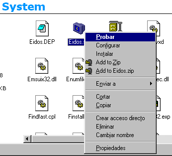
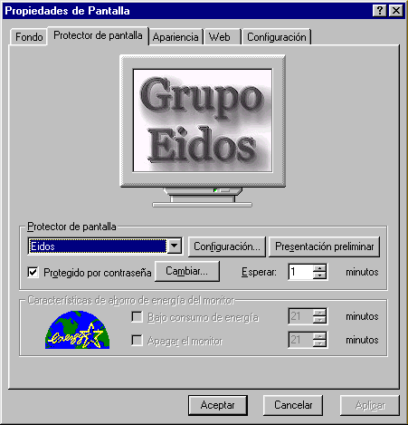
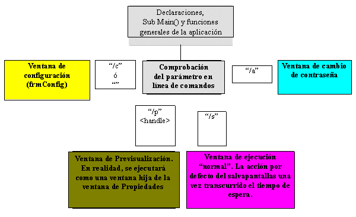

Figura 3: Pantalla de configuración del Salvapantallas
Construcción de un Salvapantallas
para Windows 95/NT con Visual Basic 5.0
Introducción
Recientemente, hemos podido comprobar cómo ciertos textos sobre programación en Visual Basic comentaban la facilidad con la que era posible construir un salvapantallas básico. Si por ello entendemos un programa que realice ALGUNAS de las funciones de un salvapantallas, estamos de acuerdo. Si, por el contrario, nos estamos refiriendo a un programa totalmente funcional, con todas las características que incorporan los salvapantallas típicos de Windows (Marquee, Mistify, Windows volando, etc.), tal afirmación es –cuando menos- muy aventurada.
En la otra cara de la moneda, nos encontramos con los consejos que el Dr. GUI ofrece en Microsoft Development Network, dentro del apartado dedicado a la construcción de salvapantallas y en respuesta a una pregunta sobre el tema, en el sentido de que: "1) Para escribir un Salvapantallas para Windows 95 se necesita el SDK de Win32 y 2) Dr. GUI recomienda usar C++ para esta tarea. Se necesita C++, o, al menos, C para interactuar con Windows...". A lo largo de este artículo veremos como eso no es exacto, si bien es cierto que la construcción correcta (o sea, completa) de un salvapantallas, supone bastante más que crear un ejecutable y cambiarle la extensión a SCR.
Por otro lado, Visual Basic 5.0 y sus nuevas capacidades gráficas y de acceso a recursos del API de Windows, como las retro-llamadas (callbacks), hacen esto perfectamente posible y, además, muy ilustrativo desde un punto de vista didáctico, lo que nos ha movido a escribir este artículo que pretende ilustrar con detenimiento los distintos aspectos de su funcionamiento y construcción.
Funcionamiento de un Salvapantallas al nivel de sistema
Desde el punto de vista del usuario, un salvapantallas es un programa ejecutable (si bien con extensión SCR) que puede configurarse, y que, transcurrido un tiempo establecido –y si el sistema no detecta actividad de ratón o de teclado -, es lanzado automáticamente por éste, oscureciendo la pantalla, ocultando el ratón, y mostrando secuencias de imágenes o figuras geométricas más o menos elaboradas, que tienen como objetivo proteger la pantalla del desgaste adicional que supone su funcionamiento, especialmente cuando no hay refresco (cambio de la información mostrada), y eso implica un bombardeo continuo y repetido de similares secuencias de electrones en idénticas zonas del monitor.
Pero un vistazo algo más reflexivo nos llevará a la conclusión de que el funcionamiento del programa no es tan simple:

Figura 1: Menú contextual un fichero Salvapantallas.
en la solapa correspondiente al Protector de Pantalla (Ver Figura 2) donde se permite, así mismo, la selección, configuración y prueba del mismo, con una serie de particularidades adicionales que veremos más adelante, entre las que cabe destacar la protección por contraseña, y la descarga automática de una instancia del salvapantallas cada vez que el usuario selecciona un botón distinto (Selección, Configuración, Presentación Preliminar).
Pensemos en este ultimo aspecto: La forma de decir a un programa salvapantallas que se le quiere ejecutar en modo Previsualización (en la pequeña ventana que simula la pantalla de la Página de Propiedades), o en modo Configuración o Demostración es mediante el paso de los siguientes parámetros:
1) Modo Previsualización:
Se produce al pinchar en el ListBox de Selección de Salvapantallas de la ventana Propiedades de Pantalla. El sistema lanza el salvapantallas y le pasa los parámetros "/p" y un <handle> donde el primero es la cadena que nos indicadora del modo de lanzamiento, y el segundo valor es el manejador de la ventana de previsualización, que deberá utilizarse para presentar la salida en esa ventana.
2) Modo Configuración:
Se debe de lanzar desde dos escenarios distintos: al seleccionar Configurar en el menú contextual (Figura 1), o al seleccionar Configuración en el menú de Propiedades de Pantalla. En el primer caso el programa recibe la cadena vacía ("") y en el segundo, "/c". Aquí, la acción a realizar será lanzar una caja de diálogo en la que el usuario pueda establecer las opciones de ejecución del salvapantallas (tipo de gráficos a mostrar, tiempo de retardo entre ellos, etc.)
3) Modo Demostración
Esta situación se produce al llamar al programa con la opción Probar desde el menú contextual, o al seleccionar la opción Presentación preliminar, de la ventana Propiedades de Pantalla. En ambos casos, el programa recibe en la línea de comandos la cadena "/s". La acción a tomar no es otra que la ejecución del Salvapantallas en modo normal (o sea, como si ejecutara su cometido una vez instalado como salvapantallas por defecto).
Cada vez que se produce una de éstas situaciones, Windows envía un mensaje WM_CLOSE (cerrar ventana) a la ventana de previsualización (si está activa, claro) y acto seguido lanza una nueva instancia del programa con su parámetro correspondiente.

Figura 2: La ventana de Propiedades de Pantalla
Vemos, por tanto, que Windows no se responsabiliza de cerrar otras instancias ya existentes de nuestro programa salvapantallas, por lo que nos veremos obligamos a hacerlo por nuestra cuenta. La única acción que toma Windows a ese respecto, es, en realidad, la que le atañe directamente, es decir, indicar a la ventana de Previsualización que se cierre mediante un mensaje emitido hacia su ventana padre (WM_CLOSE) para permitir que el nuevo salvapantallas (o el mismo, pero seleccionado nuevamente), se ejecute en esa ventana.
A todo esto hay que añadir el hecho de que los salvapantallas pueden llevar protección por contraseña. En ese caso, el programa recibe el parámetro "/a", también seguido de un manejador de ventana que deberemos de usar para situar la caja de diñalogo de cambiar contraseña justo encima de ella. (Nota: en Windows NT la gestión de constraseñas la realiza el sistema, pero en Windows 95, tenemos que hacerlo por nuestra cuenta.
Resumen de condiciones de funcionamiento
De modo que, resumiendo, el programa debe de realizar las siguientes acciones en cada situación:
Modo Demostración/Ejecución:
(Parámetro: "/s")
Modo Configuración:
(Parámetros: "/c", "")
Modo Previsualización:
(Parámetros: "/p" <Handle>)
Una vez visto el panorama desde el punto de vista de los requerimientos, podemos hacer un diseño de aplicación similar al del Diagrama 1, en el cual, el programa consta finalmente de 3 formularios y un módulo de código que hará las veces de arranque de la aplicación, comprobando el parámetro que se recibe del sistema para actuar en consecuencia.
Además, hará falta utilizar técnicas de subclasificación para capturar los mensajes dirigidos a la ventana de previsualización y el uso de otras funciones del API de Windows, por lo que tendremos que declarar un buen número de funciones para su utilización posterior, además de las constantes predefinidas y estructuras que tales funciones requieren para su puesta en marcha.

Diagrama 1: Flujo de la aplicación Salvapantallas
Como puede verse, partimos de la rutina Sub Main, y comprobamos el tipo de situación recogiendo el parámetro enviado al programa por parte de Windows. Dependiendo de ese parámetro, lanzamos el formulario adecuado:
Vayamos, pues, al código fuente. Primero, creamos un módulo general (Principal.BAS), donde situamos todas las declaraciones necesarias parar el funcionamiento, así como las que requiere el uso del API de Windows:
Módulo: PRINCIPAL.BAS
‘Grupo EIDOS, Noviembre de 1997
‘Este código y el correspondiente a todos los módulos y formularios de éste ‘ejemplo se presentan "tal como están", sin que eso implique responsabilidad ‘alguna hacia terceras partes con respecto a la utilización que pueden hacer ‘del mismo. Así mismo, está totalmente libre de derechos y el lector puede ‘modificarlo, copiarlo, o utilizarlo en sus propios programas según desee.
Option Explicit
Type WINDOWPOS
hWnd As Long
hWndInsertAfter As Long
x As Long
y As Long
cx As Long
cy As Long
flags As Long
End Type
Type POINTAPI
x As Long
y As Long
End Type
Type RECT 'Usado por GetClientRect y GetWindowRect
Left As Long
Top As Long
Right As Long
Bottom As Long
End Type
Type OsVersionInfo 'Utilizado por la función InfoSistema
dwVersionInfoSize As Long
dwMajorVersion As Long
dwMinorVersion As Long
dwBuildNumber As Long
dwPlatform As Long
szCSDVersion As String * 128
End Type
'--------------------------------------------------------------------------
'API de Win32
'--------------------------------------------------------------------------
Private Declare Function CreateDC& Lib "gdi32" Alias "CreateDCA" (ByVal lpDriverName$, ByVal lpDeviceName$, ByVal lpOutput$, ByVal lpInitData&)
Private Declare Function DeleteDC& Lib "gdi32" (ByVal hDC&)
Private Declare Function FindWindow& Lib "user32" Alias "FindWindowA" (ByVal lpClassName$, ByVal lpWindowName$)
Public Declare Function GetClientRect& Lib "user32" (ByVal hWnd&, lpRect As RECT)
Private Declare Function GetVersionEx& Lib "kernel32" Alias "GetVersionExA" (lpStruct As OsVersionInfo)
Public Declare Function GetWindowRect& Lib "user32" (ByVal hWnd&, lpRect As RECT)
Public Declare Function IsWindow& Lib "user32" (ByVal hWnd&)
Private Declare Function PwdChangePassword& Lib "mpr" Alias "PwdChangePasswordA" (ByVal lpcRegkeyname$, ByVal hWnd&, ByVal uiReserved1&, ByVal uiReserved2&)
Private Declare Function RegCloseKey& Lib "advapi32.dll" (ByVal HKey&)
Private Declare Function RegOpenKeyExA& Lib "advapi32.dll" (ByVal HKey&, ByVal lpszSubKey$, dwOptions&, ByVal samDesired&, lpHKey&)
Private Declare Function RegQueryValueExA& Lib "advapi32.dll" (ByVal HKey&, ByVal lpszValueName$, lpdwRes&, lpdwType&, ByVal lpDataBuff$, nSize&)
Public Declare Function SetForegroundWindow Lib "user32" (ByVal hWnd As Long) As Long
Public Declare Function SetParent& Lib "user32" (ByVal hWndChild As Long, ByVal hWndNewParent As Long)
Public Declare Function SetWindowLong& Lib "user32" Alias "SetWindowLongA" (ByVal hWnd&, ByVal nIndex&, ByVal dwNewLong&)
Public Declare Function SetWindowPos Lib "user32" (ByVal h&, ByVal hb&, ByVal x&, ByVal y&, ByVal cx&, ByVal cy&, ByVal f&) As Integer
Public Declare Function ShowCursor& Lib "user32" (ByVal bShow&)
Private Declare Function StretchBlt& Lib "gdi32" (ByVal hDestDC&, ByVal x&, ByVal y&, ByVal nWidth&, ByVal nHeight&, ByVal hSrcDC&, ByVal XSrc&, ByVal YSrc&, ByVal nSrcWidth&, ByVal nSrcHeight&, ByVal dwRop&)
Public Declare Function SystemParametersInfo Lib "user32" Alias "SystemParametersInfoA" (ByVal uAction As Long, ByVal uParam As Long, lpvParam As Any, ByVal fuWinIni As Long) As Long
Public Declare Function VerifyScreenSavePwd Lib "password.cpl" (ByVal hWnd&) As Boolean
'Función y constantes para SubClasificación
Private Declare Function CallWindowProc& Lib "user32" Alias "CallWindowProcA" (ByVal wndrpcPrev&, ByVal hWnd&, ByVal uMsg&, ByVal wParam&, lParam As Any)
Private Const GWL_WNDPROC = -4
Private hManejador As Long
'Constantes generales
Public Const WM_CLOSE = &H10
Public Const SWP_NOMOVE = &H2
Public Const SWP_NOSIZE = 1
Public Const SW_SHOWNORMAL = 1
Public Const flags = SWP_NOMOVE Or SWP_NOSIZE
Public Const HWND_TOPMOST = -1
Public Const SRCCOPY = &HCC0020
Public Const HKEY_CURRENT_USER = &H80000001
Public Const SPI_SCREENSAVERRUNNING = 97&
Public Const Win95 = 1&
Public Const WinNT = 2&
Public Const SW_NORMAL = 1
Public Const HWND_TOP = 0
Public Const SWP_FRAMECHANGED = &H20
Public Const SWP_DRAWFRAME = SWP_FRAMECHANGED
Public Const SWP_SHOWWINDOW = &H40
'Permisos de lectura de registro
Private Const KEY_QUERY_VALUE = &H1&
Private Const KEY_ENUMERATE_SUB_KEYS = &H8&
Private Const KEY_NOTIFY = &H10&
Private Const READ_CONTROL = &H20000
Private Const STANDARD_RIGHTS_READ = READ_CONTROL
Private Const Key_Read = STANDARD_RIGHTS_READ Or KEY_QUERY_VALUE Or KEY_ENUMERATE_SUB_KEYS Or KEY_NOTIFY
Private Const REG_DWORD = 4&
'Variables públicas
Public HayPWD As Integer 'Indicador de PWD establecida
Public hVentanaPreV As Long 'Manejador de ventana de Previsualización
Public AreaCliente As RECT 'Area cliente de la ventana de PreVisualización
Public Ratonazo As Integer 'Número de "ratonazos" (mov. de ratón)
Public HayPrevisual As Boolean 'Bandera para control del Timer
Public Pixels_X As Integer
Public Pixels_Y As Integer
Public aImagen As Variant 'Array de imágenes a mostrar
Public nCurImg As Integer 'Imagen actual
Public nTotalImg As Integer 'Total de imágenes
Public Retardo As Long 'Tiempo de retardo entre imágenes
'Para control de tipo y versión del sistema operativo
Public SistemaOp As Long
Private VersionSistema As OsVersionInfo
Sub InfoSistema()
VersionSistema.dwVersionInfoSize = 148&
Call GetVersionEx(VersionSistema)
SistemaOp = VersionSistema.dwPlatform
End Sub
Function RegGetValue$(MainKey&, SubKey$, value$)
'La clave principal debe estar declarada como HKEY pública
Dim sKeyType& 'Tipo de clave. Espera REG_SZ
Dim ret& 'Devuelto por las funciones del registro. Espera 0&
Dim lpHKey& 'Manejador de la clave abierta
Dim lpcbData& 'Longitud de la cadena devuelta
Dim ReturnedString$ 'Cadena devuelta
Dim fTempDbl!
If MainKey >= &H80000000 And MainKey <= &H80000006 Then
' Abrimos la clave
ret = RegOpenKeyExA(MainKey, SubKey, 0&, Key_Read, lpHKey)
If ret <> 0 Then
RegGetValue = ""
Exit Function 'No hay clave abierta-> Salimos
End If
' Establece buffer para valor de retorno
' Ajusta el valor siguiente para buffers más largos
lpcbData = 255
ReturnedString = Space$(lpcbData)
' Leer la clave del registro
ret& = RegQueryValueExA(lpHKey, value, ByVal 0&, sKeyType, ReturnedString, lpcbData)
If ret <> 0 Then
'Si la clave está todavía abierta, salir
RegGetValue = ""
Else
If sKeyType = REG_DWORD Then
fTempDbl = Asc(Mid$(ReturnedString, 1, 1)) + &H100& * Asc(Mid$(ReturnedString, 2, 1)) + &H10000 * Asc(Mid$(ReturnedString, 3, 1)) + &H1000000 * CDbl(Asc(Mid$(ReturnedString, 4, 1)))
ReturnedString = Format$(fTempDbl, "000")
End If
RegGetValue = Left$(ReturnedString, lpcbData - 1)
End If
'Como medida de precaución siempre cerrar las claves
'al salir
ret = RegCloseKey(lpHKey)
End If
End Function
Sub Main()
Dim cModo As String
'Comprobamos en el registro la lista de imágenes y el retardo
aImagen = GetAllSettings("EidosView", "Lista")
If IsEmpty(aImagen) Then
nTotalImg = 0
Else
nTotalImg = UBound(aImagen)
End If
'Comprobamos el retardo y ajustamos Timers
Retardo = Val(GetSetting("EidosView", "Retardo", "Segundos"))
Retardo = IIf(Retardo = 0, 3000, Retardo)
'La métrica del sistema
Pixels_X = Screen.TwipsPerPixelX
Pixels_Y = Screen.TwipsPerPixelY
cModo = UCase(Left$(Command, 2))
Select Case cModo
Case "/C", ""
'Hay que comprobar que no está en ejecución la ventana
'de configuración. Si es así, -y al estar en otro proceso
'distinto-, debemos terminar nuestra instancia activando
'previamente la que se encuentra en ejecución. La función
'EsUnico, nos devuelve un 0 ó un manejador de ventana si
'ésta existe.
hManejador = EsUnico("Configuración del Salvapantallas EIDOSView")
If hManejador <> 0 Then
SetForegroundWindow hManejador
End
Exit Sub
End If
frmConfig.Show
Case "/S"
'El sistema puede iniciar más de una sesión, así que
'hay que comprobar la existencia de una instancia
'previa. El problema surge con el hecho que se comenta
'a propósito del evento MouseMove del formulario
'principal: cuando la instancia se lanza en modo de
'Previsualización (Desde la Caja de Diálogo de
'Propiedades de Pantalla), primero se lanza la segunda
'instancia y después se cierra la primera. Eso hace
'inútil en éste caso el uso de App.PrevInstance siendo
'necesario recurrir a una comprobación a nivel de API
'que se realiza con la función FindWindow.
'FindWindow busca una ventana en ejecución por el
'contenido de su propiedad Caption: una vez encontrada
'se cierra la aplicación.
If EsUnico("EidosView-Ejecucion") <> 0 Then
Exit Sub
End If
frmEjecucion.Show
Case "/P"
'En este caso, se recibe -junto a "/p"-, un manejador
'para la ventana de Propiedades de Pantalla, que se utiliza
'para situar la salida del formulario de Previsualización
hVentanaPreV = Val(Right$(Command, Len(Command) - 2))
Load frmPrevisual
Case "/A"
'Aquí,también se recibe -junto a "/a"-, un manejador
'de la ventana de Propiedades de Pantalla. Ese manejador es
'parte de la función PwdChangePassword y sitúa la caja de
'Diálogo sobre la ventana de propiedades.
hVentanaPreV = Val(Right$(Command, Len(Command) - 2))
Call PwdChangePassword("SCRSAVE", hVentanaPreV, 0, 0)
End Select
End Sub
Function EsUnico(Titulo As String) As Long
'Buscar una ventana con una Caption determinada y devuelve 0
'si no la encuentra, y sino, el manejador de la misma
Dim hWnd As Long
hWnd = FindWindow(vbNullString, Titulo)
EsUnico = IIf(hWnd = 0, 0, hWnd)
End Function
Public Function Proc_Ventana(ByVal hWnd As Long, ByVal MsgVal As Long, ByVal wParam As Long, ByVal lParam As Long) As Long
'Este es un ejemplo de Subclasificación usando AddressOf. Se pretende
'capturar los mensajes del tipo WM_CLOSE dirigidos al control que haga
'las veces de visualizador de imágenes, cuando la Ventana de Propiedades
'haya desaparecido o si ha tenido lugar algún otro suceso.
'Esta es la razón por la que se prefiere utilizar un control PictureBox
'en lugar de un control Image en la ventana de PreVisualización. El
'control Image no dispone de propiedades hWnd y/o hDC (manejadores de
'ventana y/o contexto de dispositivo), debido a que no es REALMENTE una
'ventana, sino, más bien, un conjunto de instrucciones de dibujo. (Para
'más información sobre éstos aspectos, el lector puede recurrir a la
'escelente obra de Daniel Appleman, "Visual Basic 5.0. Programmer's
'Guide to the Win32 API", que recoge todo tipo de detalles al respecto.
If hManejador = 0 Then
'Otra curiosidad de las "retrollamadas" o funciones "CallBack":
'como se trata de código en el cual Windows llama a nuestra función
'y no al revés, se podría dar el caso de que Windows intentara
'llamar a la función, cuando la ventana ya no exista. Si ese es el
'caso (manejador de ventana = 0), nos salimos.
Exit Function
End If
Select Case MsgVal
Case WM_CLOSE
'Situamos el control PictureBox de nuevo donde estaba en un
'comienzo
Call SetParent(frmPrevisual.Picture1.hWnd, frmPrevisual.hWnd)
'Desconectamos la Bandera de control para que el Timer
'provoque la salida, en lugar de dibujar en el control
HayPrevisual = False
'Cualquier ventana que procese un mensaje WM_CLOSE debe
'devolver un 0 a Windows
Proc_Ventana = 0
Exit Function
End Select
'Si quisiéramos procesar otros mensajes, situaríamos el código dentro
'de la estructura Select Case. El resto de los mensajes se los pasamos
'al manejador de mensajes del control PictureBox
Proc_Ventana = CallWindowProc(hManejador, hWnd, MsgVal, wParam, ByVal lParam)
End Function
Public Sub Capturar(hWnd As Long)
'Devuelve el manejador de la ventana referenciada por hWnd, y le pasa
'como parámetros GWL_WNDPROC (que establece una nueva dirección para
'el procedimiento de ventana) y un puntero al procedimiento de Ventana
'definido por nosotros para que cuando Windows emita un mensaje, pase
'primero por ese procedimiento.
'Para más información acerca de funciones declaradas con argumentos
'que son punteros a funciones, referimos al lector a "The C++
'Programming Language, Second Edition", de Bjarne Stroustrup.
hManejador = SetWindowLong(hWnd, GWL_WNDPROC, AddressOf Proc_Ventana)
End Sub
Public Sub Liberar(hWnd As Long)
'Sólo liberamos si no lo está todavía
If hManejador Then
SetWindowLong hWnd, GWL_WNDPROC, hManejador
hManejador = 0
End If
End Sub
Como el lector puede comprobar, se ha comentado con profusión el código fuente al objeto de que se pueda seguir la lógica del programa en cada momento. Además, aparte de la dificultad que pueda entrañar la comprensión de los porqués de ciertas llamadas al API de Windows, por lo demás, el código fuente no tiene nada de especial, si bien hay que indicar que dentro de la rutina de configuración hacemos uso de un control de dominio público que se adjunta al código fuente y que el lector puede usar sin limitación: se trata de un control para visualizar la estructura de unidades de disco y sus directorios, que está construido en Visual Basic según sus autores y que pretende ser un puente sencillo a la utilización de llamadas al API a través de una clase preparada al efecto. En el fichero CCRPBD.ZIP que acompaña al código fuente, el lector podrá comprobar como se incluye el control, y un ejemplo de su utilización en Visual Basic.
En lo referente al fichero de configuración, hay que señalar que se ha hecho un pequeño ejercicio sobre las capacidades gráficas y de gestión de ficheros de VB5. Se trata de un visualizador de gráficos, que dispone de 3 pantallas básicas: una para la previsualización de los gráficos, otra para el control de la lista de gráficos seleccionados, y una tercera para poder revisar la lista de gráficos seleccionados. (Ver Fig. 3). Aunque la inclusión del control de gestión de directorios antes mencionado no era imprescindible, ya que el control DirListbox ya puede gestionar ese aspecto suficientemente, se ha incluido esta posibilidad para ofrecer otra visión alternativa.
También podrá observar el lector cómo se han utilizado técnicas de "stretching", o compresión de imágenes de forma que cupiesen exactamente en el control que sirve para mostrarlas, según se seleccione por el usuario. El problema es que cuando se muestran imágenes de calidad, la compresión produce una pérdida de su "aspect ratio", o patrón de escala para acomodarse al tamaño de los controles, produciendo efectos indeseados de visualización.
Así mismo, queremos recordar que en ésta versión de Visual Basic ya no es necesario utilizar las llamadas al API BitBlt() y/o StrechBlt() para esas cuestiones, ya que, tanto los formularios como el control PictureBox disponen de los métodos Move y PaintPicture, que permiten realizar las mismas funciones sin necesidad de llamadas al API, y siempre que sea posible y –si no hay una razón de peso- es preferible utilizar los recursos del propio lenguaje.
De igual forma, y para asegurar que en el módulo de configuración el usuario pueda incluir los elementos que prefiera, no se utiliza el API de Windows, optando por guardar los valores de configuración el apartado VB y VBA para Aplicaciones, que permite el acceso mediante las instrucciones Visual Basic SaveSetting/GetSetting, si bien en otras partes de la aplicación no queda más remedio que usar el API para establecer y/o leer los valores de configuración del sistema (indicar al sistema que se está ejecutando un Salvapantallas, establecer/leer el estado de protección por contraseña, etc.)
A continuación se lista el código de frmConfig
Fuente: frmConfig.frm
‘Autor: Marino Posadas (Grupo Eidos)
Option Explicit
Private Sub cmbAñadirDir_Click()
On Error GoTo Errores
If filFicheros.ListCount = 0 Then
MsgBox "El directorio no contiene imágenes", vbExclamation, "Aviso"
Else
'Añadir el directorio al Listbox de ficheros seleccionados
Dim i As Integer
For i = 0 To filFicheros.ListCount - 1
lstFicheros.AddItem filFicheros.Path & "\" & filFicheros.List(i)
Next
End If
Exit Sub
Errores:
MsgBox "Se produjo un error en el traspaso de ficheros", vbInformation, "Aviso"
End Sub
Private Sub cmbElimTodos_Click()
lstFicheros.Clear
End Sub
Private Sub cmbGuardarImg_Click()
If lstFicheros.ListCount = 0 Then
MsgBox "La lista esta vacía", vbInformation, "Aviso"
Exit Sub
End If
BDcfg.Browse
If BDcfg.Path <> "" Then
On Error GoTo Errores
Dim i As Integer, Fichero As String
For i = 0 To lstFicheros.ListCount - 1
'Obtenemos el nombre del fichero a partir del
'nombre completo (Path + Fichero)
Fichero = Dir(lstFicheros.List(i))
FileCopy lstFicheros.List(i), BDcfg.Path & "\" & Fichero
Next
End If
Exit Sub
Errores:
MsgBox "El proceso se ha interrumpido en el fichero: " & vbCrLf & _
lstFicheros.List(i) & "." & vbCrLf & "Compruebe " & _
"si hay espacio disponible en la unidad", vbCritical, _
"Aviso"
End Sub
Private Sub cmbPrimero_Click()
If lstFicheros.ListCount > 0 Then
nCurImg = 0
MostrarImagen
txtFicActual = lstFicheros.List(nCurImg)
Else
MsgBox "No hay imágenes en la lista", vbInformation, "Aviso"
End If
End Sub
Private Sub cmbAnterior_Click()
If nCurImg = 0 Then
MsgBox "Ya está al principio de la lista", vbInformation, "Aviso"
Else
nCurImg = nCurImg - 1
MostrarImagen
txtFicActual = lstFicheros.List(nCurImg)
End If
End Sub
Private Sub cmbSiguiente_Click()
If nCurImg = lstFicheros.ListCount - 1 Then
MsgBox "Ya está al final de la lista", vbInformation, "Aviso"
Else
nCurImg = nCurImg + 1
MostrarImagen
txtFicActual = lstFicheros.List(nCurImg)
End If
End Sub
Private Sub cmbUltimo_Click()
If lstFicheros.ListCount > 0 Then
nCurImg = lstFicheros.ListCount - 1
MostrarImagen
txtFicActual = lstFicheros.List(nCurImg)
Else
MsgBox "No hay imágenes en la lista", vbInformation, "Eidos"
End If
End Sub
Private Sub cmbCancelar_Click()
Unload Me
End Sub
Private Sub cmbEliminar_Click()
Dim i As Integer
For i = lstFicheros.ListCount - 1 To 0 Step -1
If lstFicheros.Selected(i) Then lstFicheros.RemoveItem (i)
Next
End Sub
Private Sub cmbGuardar_Click()
On Error GoTo Errores
Dim i As Integer
'Para evitar valores remanentes en la lista, la borramos cada vez que que se
'guarda (Equivale a hacer un Clear en un ListBox antes de reasignar valores)
If GetSetting("EidosView", "Lista", 0) <> "" Then
DeleteSetting "EidosView", "Lista"
End If
For i = 0 To lstFicheros.ListCount - 1
SaveSetting "EidosView", "Lista", i, lstFicheros.List(i)
Next
Exit Sub
Errores:
MsgBox "Error al grabar", vbInformation, "Aviso"
End Sub
Private Sub cmbAñadir_Click()
If filFicheros.filename = "" Then
MsgBox "No hay ningún fichero seleccionado", vbExclamation, "Aviso"
Else
'Añadir al Listbox de ficheros seleccionados
lstFicheros.AddItem filFicheros.Path & "\" & filFicheros.filename
End If
End Sub
Private Sub cmbAceptar_Click()
Dim Segundos As Long
Select Case cbxIntervalos.Text
Case "3 Seg.", "" 'Por si el usuario ha borrado el valor manualmente
Segundos = 3
Case "1 Seg."
Segundos = 1
Case "10 Seg."
Segundos = 10
Case "30 Seg."
Segundos = 30
Case "60 Seg."
Segundos = 60
End Select
SaveSetting "EidosView", "Retardo", "Segundos", Segundos * 1000
cmbGuardar_Click
Unload Me
End Sub
Private Sub dirDirectorios_Change()
filFicheros.Path = dirDirectorios.Path
End Sub
Private Sub drvUnidades_Change()
Dim CurDisp As String
On Error GoTo Errores
CurDisp = drvUnidades.Drive
dirDirectorios.Path = drvUnidades.Drive
Exit Sub
Errores:
MsgBox "El dispositivo no está disponible", vbCritical, "Aviso"
drvUnidades.Drive = "C:"
End Sub
Private Sub filFicheros_Click()
On Error GoTo Errores
sstSolapas.Tab = 0
picImagen.Picture = LoadPicture(filFicheros.Path & "\" & filFicheros.filename)
Exit Sub
Errores:
MsgBox "No puede mostrarse la imagen", vbInformation, "Aviso"
End Sub
Private Sub Form_Load()
Dim i As Integer
cbxIntervalos.AddItem "1 Seg."
cbxIntervalos.AddItem "3 Seg."
cbxIntervalos.AddItem "10 Seg."
cbxIntervalos.AddItem "30 Seg."
cbxIntervalos.AddItem "60 Seg."
cbxIntervalos.Text = Int(Retardo / 1000) & " Seg."
aImagen = GetAllSettings("EidosView", "Lista")
If IsEmpty(aImagen) Then Exit Sub
For i = 0 To UBound(aImagen)
lstFicheros.AddItem aImagen(i, 1)
Next
End Sub
Private Sub sstSolapas_Click(PreviousTab As Integer)
On Error GoTo Errores
If sstSolapas.Tab = 2 Then
nCurImg = 0
MostrarImagen
txtFicActual = lstFicheros.List(nCurImg)
End If
Exit Sub
Errores:
MsgBox "No puede mostrarse la imagen", vbInformation, "Aviso"
End Sub
Private Function MostrarImagen()
Dim ratio As Single, Ancho As Integer, Alto As Integer
Dim PPW As Single, PPH As Single
On Error GoTo Errores
picAux.Picture = LoadPicture(lstFicheros.List(nCurImg))
picLista.Picture = LoadPicture()
If chkEscala.value = vbChecked Then
'Factor aproximado de corrección de HIMETRICS
PPW = picAux.Picture.Width * 0.578
PPH = picAux.Picture.Height * 0.578
If (PPW > picLista.Width) Or (PPH > picLista.Height) Then
'Tomamos como referencia la medida más grande
If (PPW - picLista.Width) > (PPH - picLista.Height) Then
'Es mas ancho que alto
ratio = PPH / PPW
Ancho = picLista.Width
Alto = Ancho * ratio
Else
'Es más alto que ancho
ratio = PPW / PPH
Alto = picLista.Height
Ancho = Alto * ratio
End If
Else
Ancho = picLista.Width
Alto = picLista.Height
End If
picLista.PaintPicture picAux.Picture, 0, 0, Ancho, Alto
Else
picLista.PaintPicture picAux.Picture, 0, 0
End If
Exit Function
Errores:
MsgBox "No puede mostrarse la imagen", vbExclamation, "Aviso"
End Function
Figura 3: Pantalla de configuración del Salvapantallas
Con esto gestionamos el aspecto del salvapantallas que el usuario probablemente querrá personalizar. También es posible ignorar las capacidades de ejecución como salvapantallas, y utilizar este formulario de forma independiente, como visualizador/catalogador de gráficos.
Finalmente, los listados correspondientes a los formularios de ejecución y previsualización, más cortos, y que constan de sendas ventanas cuyas propiedades BorderStyle se han establecido a 0, para evitar que en la ejecución se puedan tener referencias a ventanas. También debe observar el lector cómo se inhabilita el ratón en tiempo de ejecución.
Nota para el proceso de depuración:
A la hora de depurar este código, probablemente lo mejor sea ignorar las acciones correspondientes a la anulación del ratón, así como el establecimiento de la ventana de ejecución como ventana de más alto nivel (llamada a SetWindowPos(hWnd, HWND_TOPMOST, 0, 0, 0, 0, FLAGS), ya que de alguna forma, éstas aplicaciones se comportan como fueran modales de sistema, y un fallo en la fase de depuración puede dejarnos en una situación difícil de controlar.
FrmEjecucion.frm (Formulario de Ejecución)
Autor: Marino Posadas (Grupo Eidos)
Option Explicit
Private Sub Form_KeyDown(KeyCode As Integer, Shift As Integer)
'Salir en cuanto el usuario pulsa una tecla
Unload Me
End Sub
Private Sub Form_Load()
'Comprobar Aviso de falta de imágenes seleccionadas y establecer
'retardo de visualización
If nTotalImg = 0 Then
lblAviso.Visible = True
lblAviso.Top = (Screen.Height - lblAviso.Height) / 2
lblAviso.Left = (Screen.Width - lblAviso.Width) / 2
End If
frmEjecucion.Timer1.Interval = Retardo
'Situa la ventana en primer plano
Call SetWindowPos(hWnd, HWND_TOPMOST, 0, 0, 0, 0, flags)
'La ventana cubre toda la pantalla
Move 0, 0, Screen.Width, Screen.Height
'Averigua si el usuario ha establecido protección por
'contraseña
HayPWD = Val(RegGetValue(HKEY_CURRENT_USER, "Control Panel\Desktop", "ScreenSaveUsePassword"))
'Comprobamos la versión del sistema (NT gestiona las
'contraseñas por si mismo.)
InfoSistema
'Si está habilitada la contraseña hay que deshabilitar las
'secuencias de escape: (CTL+ALT+DEL, ALT-TAB, etc.)
If HayPWD And SistemaOp <> WinNT Then
Call SystemParametersInfo(SPI_SCREENSAVERRUNNING, 1&, 0&, 0&)
End If
'Hacemos desaparecer el cursor
Do
Loop Until ShowCursor(False) < -5
End Sub
Private Sub Form_MouseDown(Button As Integer, Shift As Integer, x As Single, y As Single)
'Salir en cuanto el usuario pulsa una tecla
Unload Me
End Sub
Private Sub Form_MouseMove(Button As Integer, Shift As Integer, x As Single, y As Single)
Static Retraso As Long
Ratonazo = Ratonazo + 1
'Esta rutina es necesaria debido a ciertos efectos
'secundarios difíciles de detectar a priori. (Gracias
'a PierFrancesco Parente por sus atinados comentarios
'al respecto).
'El problema es doble:
'1) Por un lado es muy sencillo que se produzcan mínimos
' movimientos del cursor no deseados, por lo que sólo
' debemos considerar como movimiento real la acumula-
' ción de varios de ellos (pongamos, 4).
'2) Si ya hay una instancia de la ventana principal en
' ejecución, cuando se invoca una segunda instancia,
' -y consecuentemente se termina-,se produce un efecto
' no deseado: el formulario pierde el foco y vuelve a
' tomarlo inmediatamente después, lo que supone, a su vez,
' que se produzcan sendos eventos MouseMove, aunque el
' ratón no se haya movido.
If Ratonazo = 4 Then
Unload Me
End If
'Como los eventos de ratón son acumulativos podrían
'darse efectos secundarios, por lo que -si han pasado
'más de 7 segundos, reiniciliazamos el contador.
If Retraso = 0 Then
Retraso = Timer
ElseIf Timer - Retraso > 7 Then
Retraso = 0
Ratonazo = 0
End If
End Sub
Private Sub Form_QueryUnload(Cancel As Integer, UnloadMode As Integer)
'Si hay protección de contraseña, hay que suministrarla
'antes de salir
If HayPWD And SistemaOp <> WinNT Then
Dim PassChck As Boolean
'Rehabilitamos el cursor para que el usuario pueda
'introducir la contraseña
Do
Loop Until ShowCursor(True) > 5
'Comprobamos si esta establecida la contraseña
PassChck = VerifyScreenSavePwd(Me.hWnd)
If PassChck = False Then
'Volvemos a quitar el cursor
Do
Loop Until ShowCursor(False) < -5
Cancel = True
End If
End If
End Sub
Private Sub Form_Unload(Cancel As Integer)
'Habilitamos el cursor
Do
Loop Until ShowCursor(True) > 5
'Habilitamos teclas de escape
If HayPWD And SistemaOp <> WinNT Then
Call SystemParametersInfo(SPI_SCREENSAVERRUNNING, 0&, 0&, 0&)
End If
End Sub
Private Sub Timer1_Timer()
Dim PosX, PosY As Integer
On Error GoTo Errores
'Se establece contador cíclico de imágenes
nCurImg = IIf(nCurImg = nTotalImg, 0, nCurImg + 1)
'Centramos la imagen en pantalla
Image1.Picture = LoadPicture(aImagen(nCurImg, 1))
PosX = (Screen.Width - Image1.Width) / 2
PosY = (Screen.Height - Image1.Height) / 2
Image1.Move PosX, PosY, Image1.Width, Image1.Height
Exit Sub
Errores:
'Por si alguna imagen no puede mostrarse
Image1.Picture = LoadPicture()
End Sub
En cuanto al código final, que pertenece a la ejecución en la ventana de previsualización, lo más interesante es la forma en que declaramos a nuestra ventana como ventana hija de la Caja de Propiedades de Pantalla, junto a la función de subclasificación. Por subclasificación entendemos siempre la posibilidad de utilizar nuestras propias rutinas en lugar de las rutinas por defecto, lo que nos permite añadir funcionalidad al modo de trabajo estándar.
En este caso, lo que se hace es capturar el procedimiento de ventana mediante la llamada a la función SetWindowLong, de la siguiente forma:
hManejador = SetWindowLong(hWnd, GWL_WNDPROC, AddressOf Proc_Ventana)
Esta función recibe un puntero a la función de usuario Proc_Ventana que Windows utilizará para realizar las notificaciones estándar de envío de mensajes, en lugar de enviarlos directamente al procedimiento de ventana por defecto. En este caso, nosotros capturamos los mensajes WM_CLOSE para poder tener conocimiento de cuándo es necesario cerrar la ventana de ejecución en el modo de previsualización, ya que Windows notifica esta circunstancia a la ventana madre, y no a la nuestra.
Formulario: frmPrevisual.frm
Autor: Marino Posadas (Grupo Eidos)
Option Explicit
Dim HaySeleccion As Boolean
Private Sub Form_Load()
'Primero controlamos si hay imágenes seleccionadas y tiempo
'de retardo en visualización
If nTotalImg <> 0 Then HaySeleccion = True
frmPrevisual.Timer1.Interval = Retardo
'Asignamos la subclasificación del control para capturar
'los mensajes de cierre que se le envíen.
Capturar Picture1.hWnd
'Averiguamos el tamaño de la área cliente de la ventana
'de visualizacion de la Caja de dialogo Propiedades de Pantalla
Call GetClientRect(hVentanaPreV, AreaCliente)
'Redimensionamos el control para que sea igual que ésa área
Picture1.Move 0, 0, (AreaCliente.Right - AreaCliente.Left) * Pixels_X, (AreaCliente.Bottom - AreaCliente.Top) * Pixels_Y
'Situamos el control justo en la ventana de PreVisualización
Call SetParent(Picture1.hWnd, hVentanaPreV)
'Asignamos la bandera de HayPrevisual para que el código del
'evento Timer pueda saber la situación
HayPrevisual = True
End Sub
Private Sub Form_Unload(Cancel As Integer)
'Se debe eliminar la subclasificación al terminar
Liberar Me.hWnd
End Sub
Private Sub Timer1_Timer()
On Error GoTo Errores
If IsWindow(hVentanaPreV) = 0 Or Not HayPrevisual Then
'Si la ventana de propiedades no existe o no ha recibido el mensaje
'(por un fallo del sistema o similar), o bien se ha recibido un
'mensaje WM_CLOSE (HayPrevisual = False), terminamos
Unload Me
End
Else
If HaySeleccion Then
Dim PosX As Integer, PosY As Integer
nCurImg = IIf(nCurImg = nTotalImg, 0, nCurImg + 1)
'Situamos la imagen en la zona de Pre-Visualización
Picture1.Picture = LoadPicture(aImagen(nCurImg, 1))
End If
'Redimensionamos la salida para que se adapte al tamaño de la
'ventana
Picture1.PaintPicture Picture1.Picture, 0, 0, _
(AreaCliente.Right - AreaCliente.Left) * Pixels_X, _
(AreaCliente.Bottom - AreaCliente.Top) * Pixels_Y
End If
Exit Sub
Errores:
'Si hay problemas com la imagen, nos aseguramos de que se descargue
Picture1.Picture = LoadPicture()
End Sub
En cuanto a la fase de compilación y generación del programa, solamente recordar algunas peculiaridades: en las propiedades de proyecto, deberemos de anteponer al nombre del ejecutable la palabra clave SCRNSAVE, en la forma: SCRNSAVE:Eidos, lo que indica al sistema la naturaleza del ejecutable. También debemos recordar que la extensión debe ser SCR, y que la ubicación estándar de los salvapantallas es el directorio de sistema (o sea, Windows\System (o similar, para Windows 95), o bien WinNT/System32 (en NT). En cualquier caso, si se desea personalizar adecuadamente la instalación no se debería asumir en ningún momento que la ubicación de dichos directorios sea la ubicación por defecto, sino interrogar al API de Windows mediante la función GetSystemDirectory.
Bien, hasta aquí este ejercicio circense que supone construir una aplicación que funciona a veces como modal de sistema y que para más entretenimiento, anula algunas teclas estándar y el ratón entre otras características añadidas. Por lo demás, la utilización del API en diferentes circunstancias esperamos que resulte ilustrativa de las nuevas capacidades de Visual Basic para acercarse a las rutinas de bajo nivel. En sucesivos artículos iremos revisando las tremendas posibilidades que esto ofrece en otras áreas de la programación.
Bibliografía y Agradecimientos
Mi reconocimiento a Pier Francesco Parente, por sus acertados comentarios en el área de Microsoft de programación de API’s con Visual Basic, así como a ese excelente conocedor del API de Windows que es Joe LeVasseur, también presente con frecuencia en el foro antes citado. En cuanto a las obras de referencia, simplemente, LA OBRA:
"Visual Basic Programmer’s Guide to the Win32 API", Daniel Appleman, ZD Press.